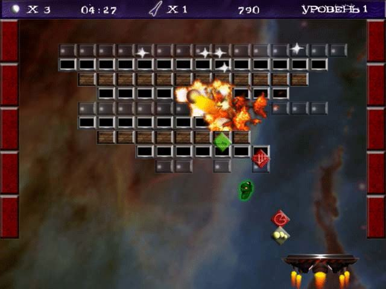
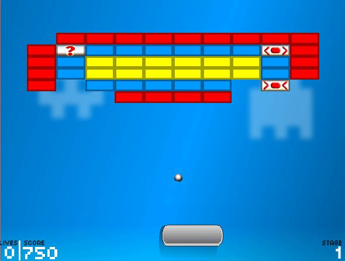

- Привет, Амиго!
- Привет, Билаабо!
- Сегодня я расскажу тебе про интерфейсы-маркеры.
Интерфейсы-маркеры – это интерфейсы, которые не содержат методов. Когда класс наследуется от такого интерфейса, то говорят, что он им помечен.
Примеры таких интерфейсов: Cloneable, Serializable, Remote.
Интерфейс Serializable используется, чтобы помечать классы, которые поддерживают сериализацию - как доказательство того, что объекты класса можно автоматически сериализовать и десериализовать.
Интерфейс Remote используется, чтобы обозначать объекты, которые поддерживают удаленный вызов – вызов из другой Java-машины и/или другого компьютера.
Интерфейс Cloneable используется, чтобы помечать классы, которые поддерживают клонирование.
Кстати, о клонировании.
Клонирование делится на два типа – обычное клонирование и глубокое клонирование.
Обычное клонирование – это когда создается дубликат только указанного объекта, без его внутренних объектов.
Глубокое клонирование – это когда создается дубликат объекта, объектов, на которые он ссылается, объектов, на которые ссылаются они и т.д.
Есть очень хороший способ выполнить качественное глубокое клонирование.
Этот способ подходит, даже если разработчики классов забыли пометить его интерфейсом Cloneable. Достаточно, чтобы объекты были сериализуемыми.
Вот что можно сделать:
1) Создать буфер (массив байт) в памяти.
2) Сериализовать в него нужный объект с подобъектами.
3) Десериализовать из буфера копию сохраненной в него группы объектов.
| Код |
|---|
|
BigObject objectOriginal = new BigObject(); ByteArrayOutputStream writeBuffer = new ByteArrayOutputStream(); ObjectOutputStream outputStream = new ObjectOutputStream(writeBuffer); outputStream.writeObject(objectOriginal); outputStream.close(); byte[] buffer = writeBuffer.toByteArray(); ByteArrayInputStream readBuffer = new ByteArrayInputStream(buffer); ObjectInputStream inputStream = new ObjectInputStream(readBuffer); BigObject objectCopy = (BigObject)inputStream.readObject(); |
На первой строчке мы создаем объект objectOriginal, который будем клонировать. Он и все его подобъекты должны поддерживать сериализацию.
На третьей строчке мы создаем ByteArrayOutputStream – массив байт, который будет динамически растягиваться при добавлении к нему новых данных (как ArrayList).
На 4-й строчке мы создаем ObjectOutputStream, который используется для сериализации.
В пятой строчке мы сериализуем объект objectOriginal в массив байт с помощью outputStream и сохраняем его в массив writeBuffer.
На 8-й строчке мы преобразовываем writeBuffer в обычный массив байт. Дальше мы из этого массива будем «читать» наш новый объект.
На 9-й строчке мы оборачиваем buffer в класс ByteArrayInputStrea, чтобы из него можно было читать, как из InputStream.
На 10-й строчке передаем объект readBuffer классу ObjectInputStream, для чтения (десериализации) объекта.
На 11-й строчке мы читаем наш объект и преобразуем его к типу BigObject.
Как тебе?
- Красота.
Кстати, когда код раскрашен разными цветами – гораздо легче его понимать.
- У Билаабо готовы для тебя задачи.
Ты очень способный ученик, Амиго.
Надеюсь, с помощью моих задач ты станешь просто недосягаем.
| Задачи |
|---|
| 1. Cloneable Добавьте java-код, чтобы метод main отработал без исключений. Удалять что-либо нельзя. |
| 2. Так-с...сопоставим Исправьте ошибки: переместите методы clone в те классы, в которых они должны быть реализованы. Лишние методы удалите. |
| 3. Создание своего интерфейса-маркера 1. Создайте интерфейс-маркер SelfInterfaceMarker 2. Создайте класс SelfInterfaceMarkerImpl, который реализует SelfInterfaceMarker 3. Добавьте в SelfInterfaceMarkerImpl минимум 2 любых различных public метода (дефолтовый public конструктор должен присутствовать) 4. Создайте исключение UnsupportedInterfaceMarkerException 5. В методе testClass класса Util: если параметр == null, то выбросьте UnsupportedInterfaceMarkerException |
- Привет, Амиго!
- Привет, Ким.
- Я хочу рассказать тебе о наследовании внутренних и вложенных классов.
- Я готов.
- На самом деле с наследованием вложенных классов (те, которые со словом static) никаких проблем нет. Они наследуются так же как и обычные классы:
| Пример |
|---|
| public class Car { public static class Door { } } public class LamborginiDoor extends Car.Door { } |
- А мы можем наследовать вложенные классы от вложенных классов, вложенных в другие классы?
- Почему бы и нет?
| Пример |
|---|
| public class Car { public static class Door { } } public class Lamborgini extends Car { public static class LamborginiDoor extends Car.Door { } } |
- Ок, понятно. Просто наследуем как обычные классы, да?
- Да. А вот внутренние классы наследуются не так просто.
При создании внутреннего класса в нем неявно хранится ссылка на объект его внешнего класса и передается она в него в конструкторе.
Поэтому в объект класса, который унаследовался от внутреннего класса, нужно передать нужный объект явно. Вот как это выглядит:
| Код |
|---|
| public class Car { public class Door { } } public class LamborginiDoor extends Car.Door { LamborginiDoor(Car car) { car.super(); } } |
В конструктор класса Door нужно неявно передать объект класса Car, это делается с помощью специальной конструкции: "car.super()".
Кстати, если ты попробуешь создать конструктор вообще без параметров, то программа просто не скомпилируется. Немного странно и непривычно, да?
- Ага. Есть пара моментов, но в целом не «rocket science».
- Привет, Амиго!
Вот тебе набор шикарных задач, надеюсь, тебе понравится:
| Задачи |
|---|
| 1. Наследование от внутреннего класса Внутри класса Solution создайте 2 внутренних public класса Apt3Bedroom, BigHall. Унаследуйте их от Apartments и Hall. |
| 2. Рефакторинг 1. Измените методы getHeight и getWidth, чтобы они возвращали HasHeight и HasWidth соответственно. 2. Для этого внутри методов getHeight и getWidth создайте локальные классы - реализации интерфейсов. 3. Переименуйте getHeight в castToHasHeight, getWidth в castToHasWidth (на имени метода нажмите Shift+F6). 4. Уберите наследование интерфейсов в классе Rectangle. |
| 3. Blackbox 1. Восстановите логику метода someAction для поля solutionAction. 2. Пример вывода смотрите коментарием к методу main. 3. Подсказка: метод someAction анонимного класса поля solutionAction должен вызвать метод сабкласса FirstClass, если param > 0, иначе вызвать метод сабкласса SecondClass 4. Свои строки создавать нельзя. 5. Классы Action, FirstClass, SecondClass менять нельзя. |
- Привет, Амиго!
Еще маленькая и небольшая тема – это локальные классы.
Как ты уже видел, классы можно создавать не только в отдельных файлах, но и внутри других классов. Так вот – это еще не все. Классы можно создавать и внутри методов. Такие классы называются локальными. Они работают как обычные внутренние классы, но их можно использовать в пределах того метода, где их объявили.
Внимание на экран:
| Пример |
|---|
| class Car { public ArrayList<Car>createPoliceCars(int count) { ArrayList<Car> result = new ArrayList<Car>(); class PoliceCar extends Car { int policeNumber; PoliceCar(int policeNumber) { this.policeNumber = policeNumber; } } for(int i=0; i<count; i++) result.add(new PoliceCar(i)); return result; } } |
- А зачем такие классы нужны?
Класс внутри метода, да еще с методами и конструкторами – это очень плохо читаемый код, разве не так?
- Именно так. Ты абсолютно прав.
В методах также можно использовать анонимные внутренние классы. Но есть одно маленькое преимущество у таких классов, из-за чего их довольно-таки часто используют внутри методов.
Класс, объявленный внутри метода, может использовать локальные переменные этого метода:
| class Car { public ArrayList<Car>createPoliceCars(int count) { ArrayList<Car> result = new ArrayList<Car>(); for(int i=0; i<count; i++) { final int number = i; result.add(new Car() { int policeNumber = number; }); } return result; } } |
Но есть одно ограничение – переменные можно только «читать», изменять их нельзя.
Поэтому существует такое ограничение:
Классы, объявленные внутри метода, могут иметь доступ только к тем переменным метода, которые помечены ключевым словом final. В примере выше ты можешь видеть, что я не могу сразу присвоить переменной policeNumber значение переменной i, а сначала сохраняю его в final-переменную number.
- То, что можно использовать переменные метода – это действительно классная штука. Надеюсь, я оценю ее по достоинству. Плохо только, что нельзя менять переменные.
- Почему их нельзя менять, тебе сегодня расскажет Элли, а я пойду пока часок вздремну.
- Спокойной ночи, Ким. Спасибо за интересный урок.
- Привет, Амиго!
И еще немного задач. Надеюсь, ты останешься доволен.
| Задачи |
|---|
| 1. Реализация интерфейса используя локальный класс В классе Cat реализуйте логику метода toSayable, которая описана в джавадоке. |
| 2. Как избежать Copy+Paste В классе Dog реализуйте логику метода toSayable, которая описана в джавадоке. |
| 3. Интернет-магазин продажи джинсов 1.Внутри файла Solution.java, но НЕ внутри класса Solution создайте 2 интерфейса: 1.1) Item с методами int getId(), double getPrice(), String getTM() 1.2) Jeans extends Item с методами int getLength() и int getSize() 2. В классе Util в методе getAllJeans добавьте пропущенную часть java-кода: 2.1) разберитесь в том, что уже есть в методе getAllJeans класса Util 2.2) создайте абстрактный classAbstractJeans от интерфейса Jeans с одним абстрактным методом, реализуйте остальные методы 2.3) создайте классы Levis и Denim от AbstractJeans, реализуйте оставшийся метод 2.4) в классе AbstractJeans реализуйте метод toString() используя Alt+Insert ->toString() 2.5) метод toString класса AbstractJeans должен начинаться с имени сабкласса, например, Levis{id=1, length=34, size=6, price=150.0} |
- Привет, Амиго! Вот тебе еще немного информации.
Я уже тебе говорила, что все анонимные классы на самом деле превращаются компилятором в обычные внутренние классы.
- Ага. Я даже помню, что у них имена – это числа: 1, 2, 3 и т.д.
- Именно так. Но вот, еще, какой есть нюанс.
Если класс был объявлен внутри метода и использовал какие-то переменные, то ссылки на них будут добавлены в сгенерированный класс. Смотри сам:
Было:
| Исходный пример: |
|---|
| class Car { public ArrayList<Car>createPoliceCars(int count) { ArrayList<Car> result = new ArrayList<Car>(); for(int i=0; i<count; i++) { final int number = i; result.add(new Car() { public String toString() { return ""+number; } }); } return result; } } |
Результат компиляции:
| Что сгенерировал компилятор: |
|---|
| class Car { public ArrayList<Car>createPoliceCars(int count) { ArrayList<Car> result = new ArrayList<Car>(); for(int i=0; i<count; i++) { final int number = i; result.add(new Anonymous2 (number)); } return result; } class Anonymous2 { final int number; Anonymous2(int number) { this.number = number; } public String toString() { return ""+number; } } } |
Понял в чем штука? Внутренний класс не может изменить локальную переменную метода, т.к. к тому времени, когда будет исполняться код этого класса, мы уже можем вообще уйти из метода.
Теперь второй момент. Метод toString() использует переданную переменную. Для этого пришлось:
А) сохранить ее внутри сгенерированного класса
Б) добавить ее в конструктор.
- Понял. Классы, объявленные внутри метода, всегда работают с копией переменных.
- Именно!
- Тогда понятно, почему переменные должны быть final. И почему их нельзя менять. Если на самом деле ты работаешь с копией, а не с оригиналом, то пользователь не поймет, почему не может менять значение переменной, а значит, надо просто ему запретить ее менять.
- Да, мне кажется, что объявление переменных final – это небольшая плата за то, что компилятор за тебя сгенерирует класс, передаст в него и сохранит там все переменные метода, которые ты хочешь использовать.
- Согласен. Все-таки это крутая штука – анонимные локальные классы.
А если я объявлю внутри метода свой локальный класс и буду в нем использовать переменные метода, компилятор их тоже добавит этому классу?
- Да, добавит в класс и его конструктор.
- Я так и думал.
- Привет, Амиго!
Как ты уже знаешь, у анонимных внутренних классов не может быть конструктора.
- Ага. Это очень неудобно. Конструктор – это очень нужная вещь.
- Как говорится, если нельзя, но очень хочется, то можно.
Вспомни, у статических переменных нет статического конструктора, но есть статический инициализатор – static-блок.
- Ага, я помню.
- Вот точно такой же инициализатор, только не статик, есть у анонимных внутренних классов:
| Пример |
|---|
| class Car { public ArrayList<Car>createPoliceCars(int count) { ArrayList<Car> result = new ArrayList<Car>(); for(int i=0; i<count; i++) { final int number = i; result.add(new Car() { int policeNumber; { policeNumber = number; } }); } return result; } } |
В этот раз я выделила красным цветом код анонимного внутреннего класса, а фиолетовым – его инициализатор – или, фактически, конструктор. Тело «конструктора» есть, а заголовка метода – нет:
| Ожидание | Реальность |
|---|---|
| class Car { int policeNumber; { policeNumber = number; } } |
class Car { int policeNumber; { policeNumber = number; } } |
Ты можешь объявлять переменные внутри такого класса и инициализировать их внутри инициализатора.
- Отлично, теперь ограничений значительно меньше.
- На этом мы наше знакомство с внутренними классами и закончим. Надеюсь, тебе понравилось.
- Очень. Лекции Ким, Риши, а особенно твои, Элли, были просто бесподобными.
- Льстец! Продолжай…
- А вот и новенькие задачи для моего друга:
| Задачи |
|---|
| 1. Вспомним наследование Исправить наследование во всех классах, чтобы вывод метода main был CCBAYS |
| 2. Знания - сила! 1. В методе sort написать компаратор для Stock: 1.1. Первичная сортировка по name в алфавитном порядке 1.2. Вторичная сортировка по дате без учета часов, минут, секунд (сверху самые новые), потом по прибыли от положительных к отрицательным ... open 125,64 and last 126,74 - тут прибыль = 126,74-125,64 ... open 125,64 and last 123,43 - тут прибыль = 123,43-125,64 2. Разобраться с *Format-ами и исправить IllegalArgumentException. Подсказка - это одна строчка. Пример вывода: Fake Apple Inc. AAPL | 17-11-2025 open 125,64 and last 123,43 Fake Oracle Corporation ORCL | 21-08-1989 closed 0,15 |
| 3. Рефакторинг Сделайте так, чтобы метод getIterator возвращал анонимный класс. Перенесите логику LocalIterator в анонимный класс. Меняйте только тело метода getIterator. |
- Привет, Амиго!
- Привет, Хулио.
Знаешь, я начал следовать твоему совету и гуглить все, о чем ты просил. Действительно, в интернете очень много ответов прямо с примерами. А еще я сайт классный нашел – SakOverlow. Кажется, так называется.
- StackOverflow (http://stackoverflow.com/) – это крупнейший сайт/форум, где программисты помогают программистам (и новичкам!). Там практически всегда тебе дают развернутый ответ на твой вопрос, так еще и с примерами.
На StackOverflow есть свой поиск по темам.
Но ты всегда можешь воспользоваться Google для поиска по этому сайту.
- Так я и ищу через Google.
- Не-не-не. Я о другом. В Google в строке поиска напиши:
| Примеры запросов | |
|---|---|
| 1 | site:stackoverflow.com java download file |
| 2 | site:stackoverflow.com java upload file |
| 3 | site:javarush.ru путь программиста |
| 4 | site:habrahbar.ru java как скачать файл |
Если ты хочешь, чтобы Google искал что-то только на определенном сайте, для этого в поисковом запросе нужно указать имя сайта с префиксом «site:»
Вот тебе несколько вещей, которые нужно найти на сайте stackoverflow.com и д.р.
| Что нужно найти: | Где: |
|---|---|
| java string intern | stackoverflow.com |
| java thread state | stackoverflow.com |
| java hashset | stackoverflow.com |
| java string intern | hashcode.ru |
| java thread state | hashcode.ru |
| java hashset | hashcode.ru |
| java string intern | oracle.com |
| java thread state | oracle.com |
| Java home | oracle.com |
| java hashset | habrahabr.ru |
- Привет, Амиго!
Не понимаю я этих интерактивных уроков. Вот в мое время – все, на что мог рассчитывать студент, – это старая добрая нудная лекция.
- Я тоже так считаю.
- Вот тебе одна из этого великолепия:
- Привет, Амиго!
- Здорово. Слушай, Хулио, а ты в армии служил?
- Нет, Амиго, не служил. Меня не взяли...
- А почему тебя не взяли?
- Найти не смогли...
- Привет, Амиго! Вот тебе несколько вопросов к собеседованиям:
| Вопросы к собеседованиям | |
|---|---|
| 1 | Во что компилируются анонимные внутренние классы? |
| 2 | Можно ли наследовать внутренние классы? |
| 3 | Можно ли наследовать анонимные внутренние классы? |
| 4 | Можно ли переопределять внутренние классы? |
| 5 | Какие ограничения есть у локальных классов? |
| 6 | Может ли анонимный внутренний класс содержать статические методы? |
| 7 | Можно ли создать объект внутреннего класса, если у внешнего класса только private конструктор? |
| 8 | Можно ли объявлять внутренние классы private? |
| 9 | Можно ли объявлять анонимные внутренние классы private? |
| 10 | Сколько у класса максимально может быть внутренних классов? |
- Профессор, но мне не рассказывали ответы на эти вопросы!
- Амиго, а ты думаешь, что работодатели готовят вопросы на собеседование по моим лекциям?
- Э-э-э. Нет.
- Это тебе не универ. Нужны ответы – гугли.
И скажи спасибо за сами вопросы.
- Спасибо.
- Привет, Амиго!
- Здравия желаю, Капитан Бобров!
- Сегодня у тебя новое, более сложное задание.
Мы напишем игру Арканоид.
Вот как, примерно, это выглядит ссылка
- И что, будет такая же графика?
- Конечно, нет, мы же не гражданские.
- А что, такая?
- Все будет консольно-спартанское, как и должно быть у военных.
Приступай.
- Есть, приступить к выполнению задачи.